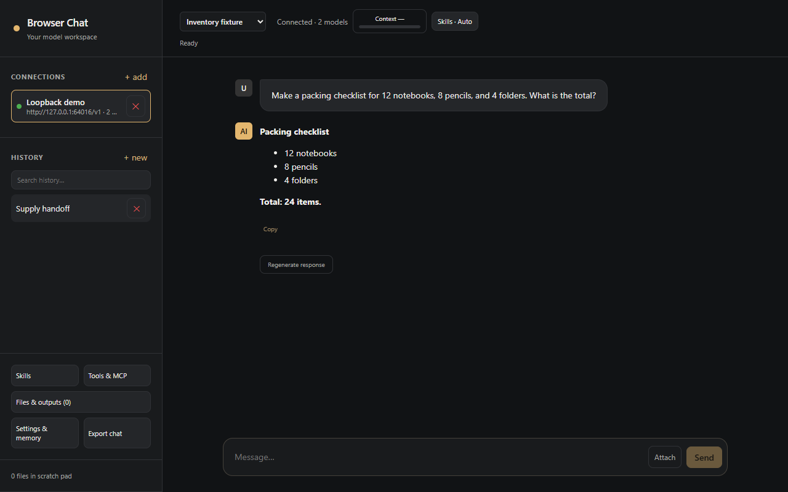

Pick up a chat where you left it.
Browser Chat keeps your conversations on your computer and lets you choose the model server that answers. Save a packing list in one shift and reopen the same conversation when it’s time to fill the box. The desktop build can also shorten what a model receives without shortening the transcript you keep.
Make a packing list

Read the full conversation. Send a shorter one.
Long-running work needs two different records: the transcript a person can return to, and the smaller set of messages a model needs for its next answer. In the desktop test, “launch Friday” and “mark it red” must survive compaction, while the original transcript remains unchanged.
Kept locally
The original messages stay in History, including what was decided and how the conversation got there. Clearing a compacted checkpoint does not clear the conversation.
Passed to the model
A compact recap and the recent messages, while the earlier message sequence still matches. If Friday is edited to Monday, the saved recap no longer applies. The old date is not reused just because it was in the recap.
The browser example below shows ordinary history. This separate example describes the desktop test; the site does not run Electron. The local database is unencrypted, and a remote provider still receives the context selected for its request.
Pack the next supply box
Start a chat with your connected model. Name it Supply handoff and enter the counts:
Make a packing checklist for 12 notebooks, 8 pencils, and 4 folders. What is the total?
Read the list as it arrives, then check the total against your count. Open Supply handoff in History when it’s time to pack the box. No connector is needed. View the streaming reply at full size. This frame shows the same local test conversation in Chrome.

Start Browser Chat
Start a compatible model server with a model loaded. With Node.js 24 LTS installed, download the source ZIP and extract it. From the folder containing package.json:
npm ci
npm startIn Connections → + add, choose a preset or enter the server URL. No model weights or installer are included.
Where the conversation goes
Chat history stays on your computer, in a database the app does not encrypt. Your chosen model server receives the conversation context and any attachment content included in the request. Web tools and connectors can contact other services.